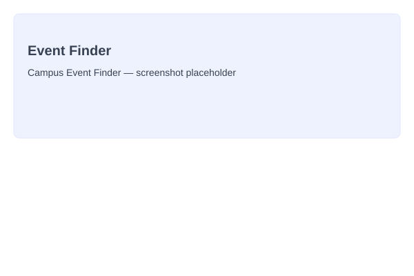

Term project
Student Portfolio & Academic Manager
This very site: a five-page responsive portfolio with an interactive academic planner, built for the Introduction to Web Technologies course.
Coursework & personal work
A few things I've built while learning web technologies — including this site itself.
Featured project
This comprehensive portfolio site showcases my journey as a web developer. It features a fully functional academic planner with task management, grade calculation, and progress tracking.
Filter by project type and category to explore my work.
Term project
This very site: a five-page responsive portfolio with an interactive academic planner, built for the Introduction to Web Technologies course.

Class exercise
A small JavaScript app that filters and searches a list of campus events by date and category, using array methods and DOM updates.
Personal project
A Pomodoro-style timer with a weekly habit grid, built to help me stay focused during independent study blocks between classes.
Skills & Tools
A snapshot of the technologies and techniques I've applied across my projects.
Development Progress
Key milestones and updates from my project development journey.
August 2026
Successfully launched the full Student Portfolio & Academic Manager site with all five pages, interactive planner, and mobile responsiveness.
July 2026
Implemented task management system with filtering, priority levels, due date tracking, and localStorage persistence for long-term data retention.
July 2026
Built Pomodoro timer and habit tracker to support personal productivity and academic success.
June 2026
Completed Campus Event Finder exercise, demonstrating proficiency with JavaScript array methods and dynamic DOM manipulation.
May 2026
Applied mobile-first design principles using CSS Grid and media queries to ensure cross-device compatibility.